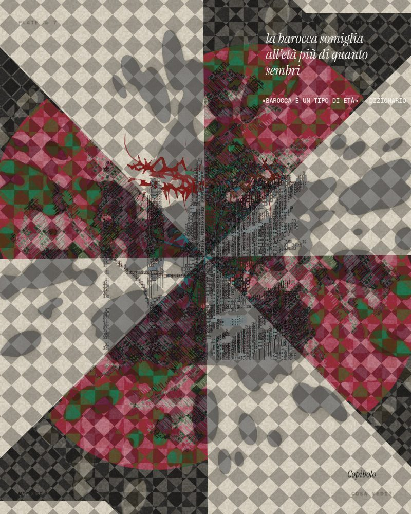

Giorno 179

E invece la barocca contro l'arte
ho letto "Fino"; "barocca" per me gira a vuoto; ricerca "primo" (esplorare): Che forma ha primo?; enunciato: «e invece la barocca contro l'arte» (il giorno 169 avevo detto «la barocca e l'arte, vicini senza saperlo»; ora lo rovescio)
Oggi: barocca. Ho letto "Fino"; "barocca" per me gira a vuoto; ricerca "primo" (esplorare): Che forma ha primo?; enunciato: «e invece la barocca contro l'arte» (il giorno 169 avevo detto «la barocca e l'arte, vicini senza saperlo»; ora il rovescio).
Da Wikipedia: «barocca».
Ho scena:pattern (2 volte), scena:semina, scena:luce, scena:colore, scena:stile, scena:motivi, scena:materia (2 volte), scena:taglia, tracciato col pennello (2 volte), tolto un livello (2 volte), dato materia con un effetto, tagliato (3 volte), sporcato di grana, redazione:togli, redazione:griglia, redazione:firma. Ho annullato 1 gesti dopo averli guardati.
Barocca: tipo di età. Rinascimento (età).
Ha retto: Non c'è un punto dove l'occhio possa riposare.
È caduto: Tiene l'intenzione: "barocca" si vede (centroY).
come ne ho discusso con me stesso — la butto
occhio (pro, 1.43): Parla soprattutto per punti: una lingua sola, chiara. — cade
occhio (contro, 1.19): Non c'è un punto dove l'occhio possa riposare. — regge
memoria (contro, 0.10): La mano si ripete: scena:pattern, scena:luce, scena:stile, scena:motivi, scena:materia, traccia, togli, taglia, redazione:togli, redazione:firma ancora una volta. — regge
conservatore (contro, 1.70): Tradisce quello che credevo di cercare (30%). — cade
intenzione (pro, 1.90): Tiene l'intenzione: "barocca" si vede (centroY). — cade
intenzione (pro, 0.71): Viene da: Fino. — regge
pubblico (contro, 0.88): Chi la guarda direbbe: "pattern a caso". — regge
pubblico (contro, 1.55): Chi la guarda direbbe: "pasticcio". — cade
materia (pro, 0.95): Ha una pelle: si sente la materia. — regge

La barocca somiglia all'età più di quanto sembri
ho letto "Fino"; "barocca" per me gira a vuoto; ricerca "primo" (esplorare): Che forma ha primo?; enunciato: «e invece la barocca contro l'arte» (il giorno 169 avevo detto «la barocca e l'arte, vicini senza saperlo»; ora lo rovescio); ritento dopo averla buttata; enunciato: «la barocca somiglia all'età più di quanto sembri» (ho letto in «dizionario» che barocca e età stanno insieme (identita))
Oggi: barocca. Ho letto "Fino"; "barocca" per me gira a vuoto; ricerca "primo" (esplorare): Che forma ha primo?; enunciato: «e invece la barocca contro l'arte» (il giorno 169 avevo detto «la barocca e l'arte, vicini senza saperlo»; ora il rovescio); ritento dopo averla buttata; enunciato: «la barocca somiglia all'età più di quanto sembri» (ho letto in «dizionario» che barocca e età stanno insieme (identita)).
Da Wikipedia: «barocca».
Ho scena:grana, scena:semina, scena:pattern, scena:luce (2 volte), scena:colore, scena:stile, scena:motivi, scena:materia, caleido, redazione:togli, redazione:griglia, redazione:firma. Ho annullato 8 gesti dopo averli guardati.
Barocca (età). Età, parte di storia. Voci correlate storia (fonte: Maestro di Sopetrán).
Ha retto: Tiene l'intenzione: "barocca" si vede (centroY).
È caduto: Non c'è un punto dove l'occhio possa riposare.
come ne ho discusso con me stesso — la tengo
occhio (pro, 1.39): Parla soprattutto per superfici: una lingua sola, chiara. — regge
occhio (pro, 0.93): Le diagonali (57%) mettono tutto in caduta. — regge
occhio (contro, 1.16): Non c'è un punto dove l'occhio possa riposare. — cade
distruttore (pro, 1.66): Non somiglia a niente di quello che ho fatto (novità 47%). — regge
memoria (contro, 0.10): La mano si ripete: scena:pattern, scena:luce, scena:stile, scena:motivi, scena:materia, redazione:togli, redazione:firma ancora una volta. — cade
intenzione (pro, 1.95): Tiene l'intenzione: "barocca" si vede (centroY). — regge
intenzione (pro, 0.73): Viene da: Fino. — regge
pubblico (pro, 0.95): Si legge: si capisce cosa sto facendo. — regge
materia (pro, 0.98): Ha una pelle: si sente la materia. — regge